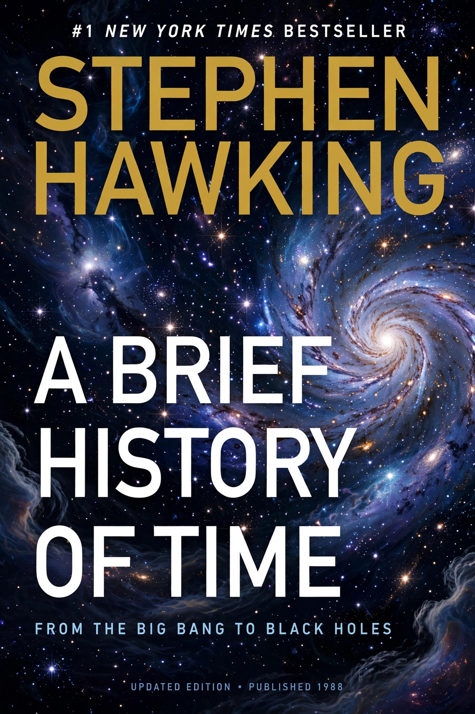

| Author | Stephen Hawking |
|---|---|
| Language | English |
| Subject | Cosmology |
| Publisher | Bantam Books |
| Publication date | 1988 |
| Pages | 256 (first edition) |
| Followed by | The Universe in a Nutshell (2001) |
A Brief History of Time: From the Big Bang to Black Holes is a popular-science book on cosmology by the English physicist Stephen Hawking, first published in 1988. It became an international bestseller and one of the most widely read science books of the twentieth century, remaining on the British Sunday Times best-seller list for a record-breaking 237 weeks and selling more than ten million copies worldwide.
The book surveys the history of ideas about the universe, from the cosmology of Aristotle and Ptolemy through Newton and Einstein, and explains central concepts of modern theoretical physics for a general readership: the Big Bang, black holes, the expansion of the universe, the uncertainty principle, elementary particles and fundamental forces, and Hawking's own no-boundary proposal for the origin of the universe. It discusses the search for a unifying theory of quantum gravity and the concept of imaginary time. Hawking famously included only one equation, E = mc², remarking that he had been warned every equation would halve the book's sales.
The book brought cosmology and its author to global fame, though it also acquired a reputation as "the most unread bestseller" because of the difficulty of its subject matter. An updated and expanded edition appeared in 1996, and in 2005 Hawking published A Briefer History of Time with Leonard Mlodinow, a more accessible revision. Errol Morris directed a film adaptation, A Brief History of Time (1991), combining interviews with Hawking and dramatic elements.